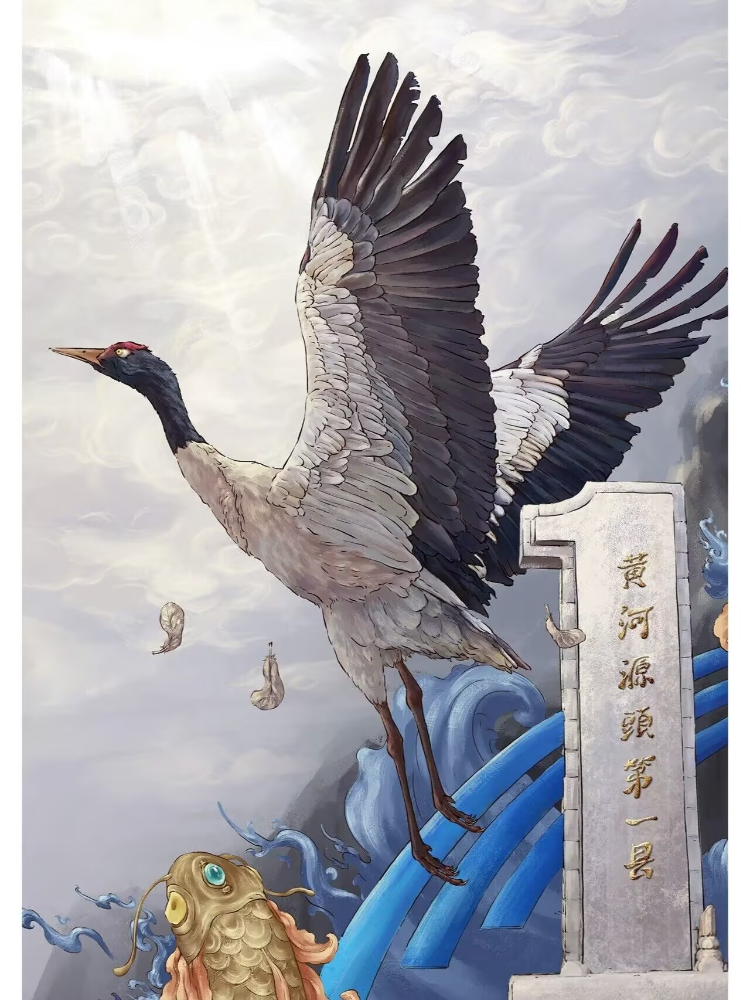
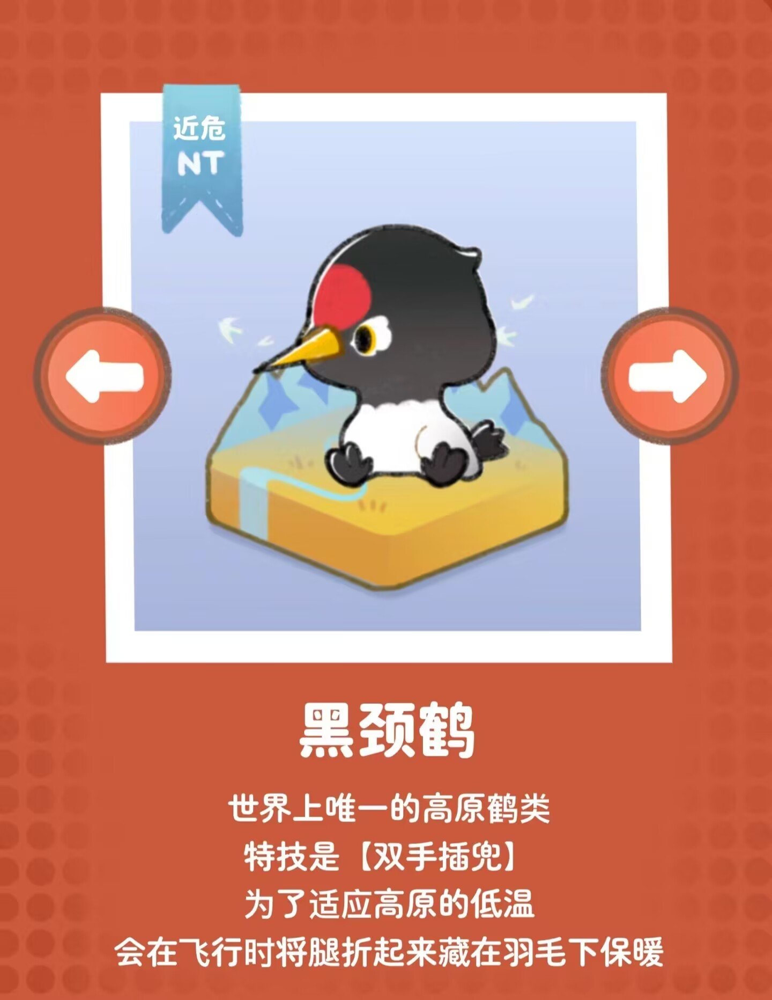
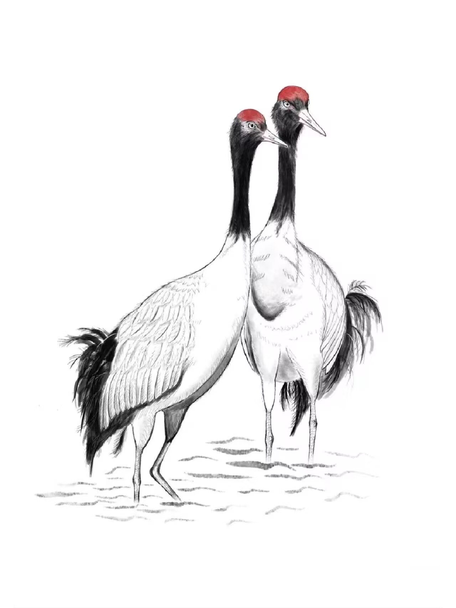

| 首页 | 全球动物保护日历 | 濒危动物图鉴 | 国际上采取措施 | 行动指南 | Every Live Is A Part Of The Planet We Called Earth. |
 黑颈鹤想对你说： “我们依赖于这片土地生存和繁衍。我们的存在是这片土地生态多样性的一部分，让我们共享这片天空和水域。” |
 |  世界上唯一一种生活在高原的鹤类！ |
| 首页 | 全球动物保护日历 | 濒危动物图鉴 | 国际上采取措施 | 行动指南 | We All Live In The Same Earth , Breathe The Same Air. |